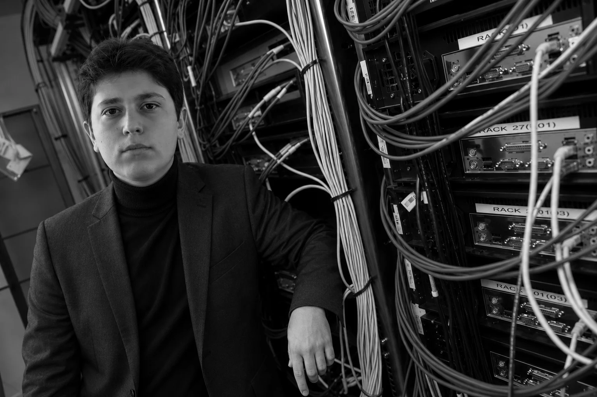
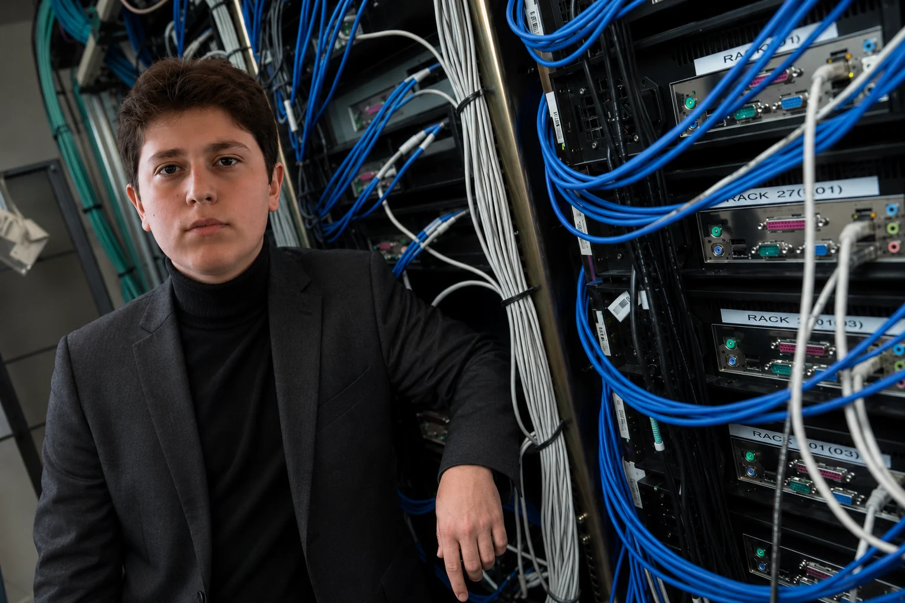

MERAK
Her sorunun arkasında yeni bir çözüm olabileceğine inanmak.
15 YAŞINDA BİR MUCİT, KURUCU VE GİRİŞİMCİ.

Ben Ömer Yapraklıoğlu. Teknolojiye, yazılıma ve insan hayatını kolaylaştıran fikirlere ilgi duyuyorum.
15 yaşında bir mucit ve girişimci olarak geliştirdiğim ürünlerde yapay zekâdan dijital eğlenceye farklı alanları bir araya getiriyorum.
Çalışmalarım arasında AURA Technology, AURA Snap ve Sahne Plus bulunuyor. Her proje, daha iyi bir deneyim kurma çabasının parçası.
PROJELERİMİ GÖR →
BUILDING WHAT COMES NEXT.Her sorunun arkasında yeni bir çözüm olabileceğine inanmak.
Fikirleri deneyerek, ölçerek ve iyileştirerek gerçek ürünlere dönüştürmek.
İnsanların kullanabildiği, anlamlı ve sürdürülebilir deneyimler tasarlamak.